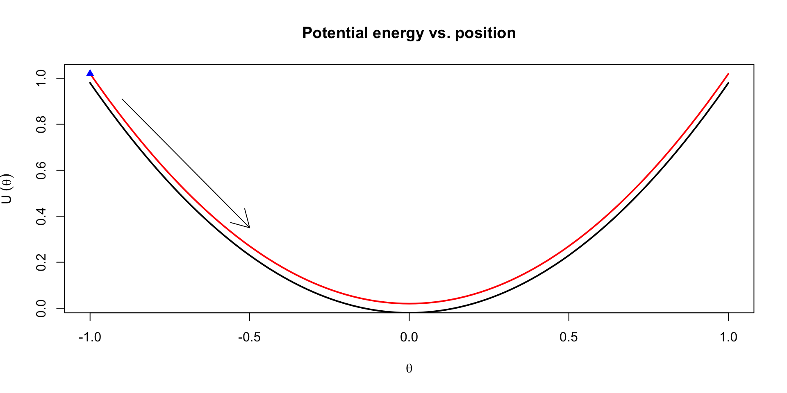
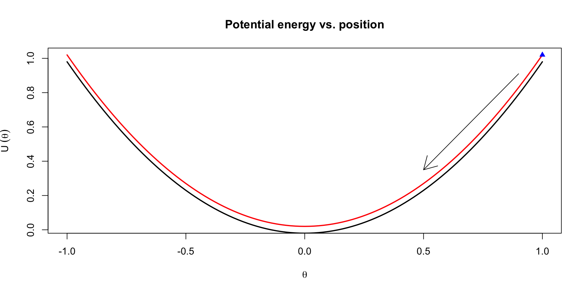
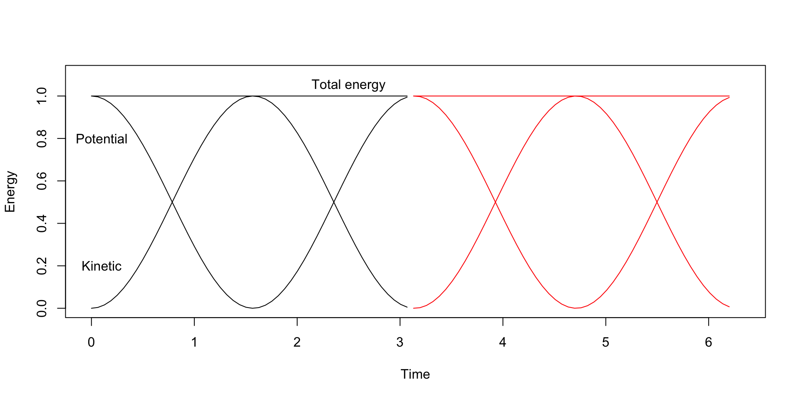
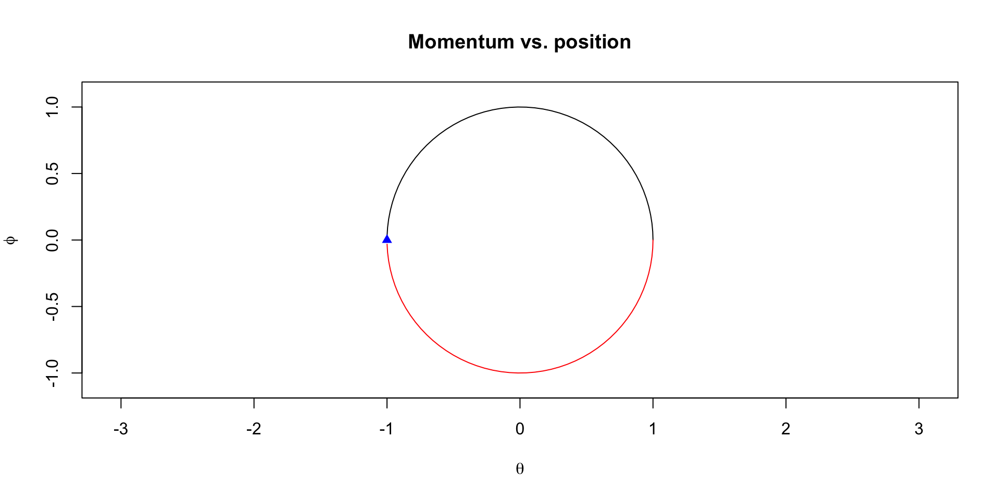

Hamiltonian Monte Carlo uses gradient information and dynamic simulation to reduce random-walk and increase acceptance rate
The performance scales well with the number of dimensions
This lecture introduces the basic HMC and No-U-Turn-Sampler based dynamic HMC
Other useful variants have been developed recently
Stan is the most popular probabilistic programming framework
Many recent probprog frameworks use dynamic HMC samplers
This lecture introduces Stan language and main features
Later you can also use higher level packages built on top of Stan
BDA Chapter 12
12.1 Efficient Gibbs samplers (not part of the course)
12.2 Efficient Metropolis jump rules (not part of the course)
12.3 Further extensions to Gibbs and Metropolis (not part of the course)
12.4 Hamiltonian Monte Carlo (important)
12.5 Hamiltonian dynamics for a simple hierarchical model (useful example)
12.6 Stan: developing a computing environment (useful intro)
Extra material for HMC / NUTS
An introduction for applied users with good visualizations:
Monnahan, Thorson, and Branch (2016) Faster estimation of Bayesian models in ecology using Hamiltonian Monte Carlo. https://dx.doi.org/10.1111/2041-210X.12681
Sample from 1) \(p(\theta_2)\), 2) \(p(\theta_1 \mid \theta_2)\)
Metropolis: jointly sample from \(p(\theta_1,\theta_2)\)
Jump distribution is a combination of proposal distribution and point mass at the previous value
HMC
Augment with \(\phi\) (the same dimensionality as \(\theta\))
sample directly from \(p(\phi)\)
make a special joint Metropolis step for \(p(\theta,\phi)=p(\theta)p(\phi)\)
Hamiltonian Monte Carlo - Two sampling steps
Sample from \(p(\phi)\)
Define \(p(\phi) = \text{Normal}(0,1)\)
Metropolis update for \(p(\theta,\phi)=p(\theta)p(\phi)\)
Proposal from Hamiltonian dynamic simulation
Hamiltonian dynamic simulation
Joint distribution in terms of “potential energy” \(U(\theta)\) and “kinetic energy” \(K(\phi)\)\[
\begin{aligned}
p(\theta,\phi)& =p(\theta)p(\phi) \\
& =\frac{1}{Z}\exp(-(U(\theta)+K(\phi))) \\
& =\frac{1}{Z}\exp(-H(\theta,\phi))
\end{aligned}
\]
where:
\(U\) is potential energy function
\(K\) is kinetic energy function
\(H\) is Hamiltonian energy function
\(\phi\) is called a momentum variable
\[U(\theta)=-\log(p(\theta))+C\]
\[K(\phi)=-\log(p(\phi))+C\]
Simple dynamic system
Imagine a hockey puck with mass \(m\) on an ice rink connected to the boards by a spring
It can move only in one dimension; let’s call it’s position relative to the board \(\theta\)
If we push the puck towards the board, compressing the spring, we increase the potential energy of the puck
Letting go of the puck, the potential energy turns into kinetic energy over time by changing the momentum, \(\phi\) of the puck
In this system, the potential energy is \(\frac{1}{2c} \theta^2\), while the kinetic energy is \(\frac{1}{2m}\phi^2\)
Hamilton’s equations
We want to find the equations of motion for the system, i.e. \(\theta(t)\) and \(\phi(t)\)
Hamilton’s equations gives us a recipe to do so: \[
\begin{aligned}
\frac{d\theta_i}{dt} & = \frac{\partial H}{\partial \phi_i}\\
\frac{d\phi_i}{dt} & = -\frac{\partial H}{\partial \theta_i}
\end{aligned}
\]
This is a system of ODEs with the following solution \[
\begin{aligned}
\theta(t) & = r \cos(\frac{t}{\sqrt{mc}} + a) \\
\phi(t) & = - r\sqrt{m/c} \sin(\frac{t}{\sqrt{mc}} + a)\\
\end{aligned}
\]
The total energy, or the Hamiltonian, has the form \[
\begin{aligned}
U(\theta) + K(\phi) & = \frac{1}{2c} \theta^2 + \frac{1}{2m} \phi^2 \\
& = \frac{1}{2c} r^2 \cos^2(\frac{t}{\sqrt{mc}} + a) + \frac{1}{2m}\frac{m}{c} r^2 \sin^2(\frac{t}{\sqrt{mc}} + a) \\
& = \frac{r^2}{2c}(\cos^2(\frac{t}{\sqrt{mc}} + a) + \sin^2(\frac{t}{\sqrt{mc}} + a))\\
& = r^2 / 2c
\end{aligned}
\]
Visualization of trajectories


Energy plots


Hamiltonian Monte Carlo - Complete algorithm
Two sampling steps:
Sample from \(p(\phi)\)
Define \(p(\phi) = \mathcal{N}(0,1)\)
Metropolis update for \(p(\theta,\phi)=p(\theta)p(\phi)\)
Proposal from Hamiltonian dynamic simulation: \(p(\theta,\phi) \propto \exp(-H(\theta,\phi))\)
Recap from last week
Hamiltonian dynamics can generate perfect proposal distributions for \(\theta_s(t) \mid \theta_{s-1}(0)\)
Good properties of Hamiltonian proposals require tuning the time horizon \(t\) over which Hamilton’s equations will be solved
An optimal \(t\) will be such that \(\text{Cov}(\theta_s(t), \theta_{s-k}(0)) \approx 0\) for all \(k = 1, \dots \infty\)
Integrating Hamilton’s equations can’t be done analytically for most problems, so we resort to numerical integration
The leapfrog integrator is the standard integrator because it has good properties:
Preserves volume
Reversible
Discretization error does not usually grow in time
These properties hold as long as the step-size \(\epsilon\) is chosen appropriately
Under numerical integration, choosing a \(t\) is equivalent to choosing \(L = t / \epsilon\), or the number of integrator steps needed to get from \(\theta_{s-1}(0)\) to \(\theta_s(t)\)
We need to choose \(t\) and \(\epsilon\)
Leapfrog discretization + Metropolis
Leapfrog discretization
Due to the discretization error the simulation steps away from the constant contour
Metropolis step (with acceptance probability based on): \[r=\exp\left(-H(\theta^*,\phi^*)+H(\theta^{(t-1)},\phi^{(t-1)})\right)\]
Accept if the Hamiltonian energy in the end is higher
Accept with some probability if the Hamiltonian energy in the end is lower